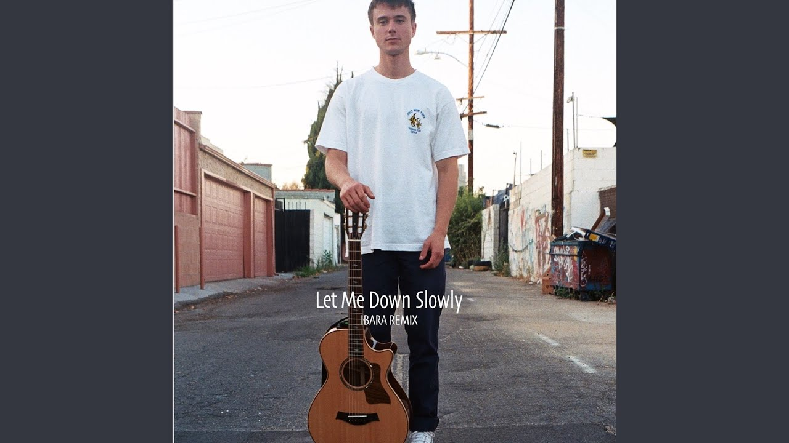
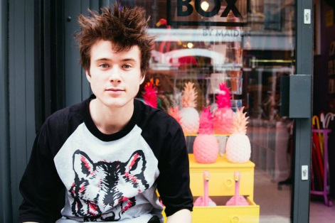
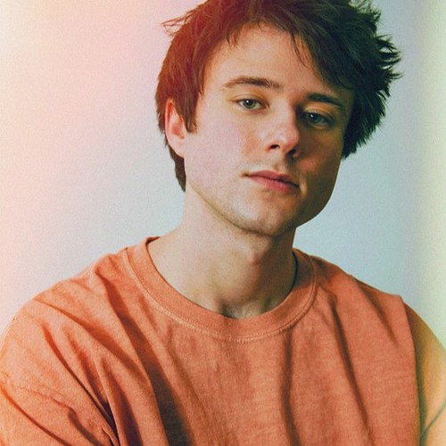
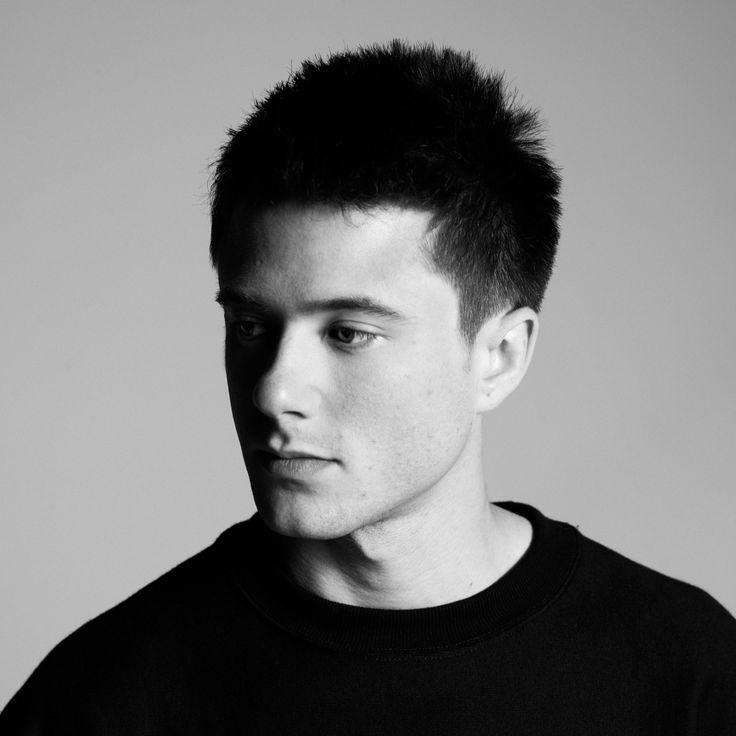

<html>
  <head>
    <link rel="stylesheet" href="style.css">
  </head>
</html>
<body>
  <nav>
    <ul>
      <li><a href="#">семя и детство</a></li>
      <li><a href="#">Как пришла популярность</a></li>
      <li><a href="#">Концерты,песни,клипы</a></li>
      <li><a href="#">Личная жизнь</a></li>
      <li><a href="#">Интересные факты из биографии</a></li>
    </ul>
  </nav>
  <main>
    <article>
      <h1>Alek Benjamin</h1>
  <p>Алек родился 28 мая 1994 года в Финиксе, штат Аризона. Никто из его семьи не был связан с музыкой.
Он был одиночкой в школе и предпочитал не заводить друзей. Мало думал о своей карьере. Но когда он вырос и начал слушать таких артистов как Пол Саймон, Эминем и Доктор Дре, он начал получать заметный интерес к музыке. К тому времени, когда он был в средней школе, он начал практиковать пение самостоятельно. Его отец играл музыку в качестве хобби. Однажды Алек взял старую гитару своего отца и начал учиться играть на ней самостоятельно. Он не посещал никаких занятий по игре на гитаре.</p>
<p>Ему было 16 лет, когда многие самодеятельные музыканты переезжали на YouTube, чтобы продемонстрировать свои навыки. В то время как большинство из них выпускали каверы на известные треки, Алек решил, что он будет создавать оригинальную музыку. Он начал писать свои собственные песни и сочинял их с помощью компьютерной программы.</p>
<p>К тому времени, когда он окончил среднюю школу, он решил, что будет заниматься музыкой в качестве варианта карьеры. Вскоре он начал писать электронные письма художникам, которые, как он думал, могли бы помочь ему в некотором роде.</p>
<p>Он также начал перемещаться в поисках лучших возможностей. Его музыку обожали, он начал встречаться с нужными людьми.
После окончания средней школы Алек поступил в Университет Южной Калифорнии.</p>
<h2>Как пришла популярность</h2>

<p>Алек познакомился с композитором по имени Саша Скарбек через общего друга. Саша писал песни для таких исполнителей как Майли Сайрус и Лана Дель Рей. У Саши была своя студия в Лондоне, и Алек летал через Атлантический океан без какой-либо финансовой поддержки со стороны своих родителей.
Пока он был в Европе, он построил значительное поклонное следование. Он исполнил несколько концертов и выступил на «Берлинской музыкальной неделе» и «Фестивале Репербан. Там он впервые почувствовал себя популярным. Вскоре люди стали приходить на концерты, чтобы послушать его выступления.
В конце концов он подписал контракт с небольшим независимым лейблом под названием White Rope и выпустил свой дебютный микстейп Mixtape 1: America в 2013 году. Это было умеренное попадание. В том же году Алек вернулся в США и выступил на нескольких площадках в Лос-Анджелесе. Разведчики талантов из Коламбия Рекордс нашли его и вскоре предложили ему контракт на запись.</p>
<h3>Концерты, песни, клипы</h3>
<p>В то время Алеку было 20 лет. Сделка с «Колумбией» казалась мне большой возможностью. Хотя Columbia Records обещала выпустить его дебютный альбом, они отменили сделку через 24 часа после представления его первого альбома.</p>

<p>Это был серьезный удар для Алека, он решил начать свою карьеру с нуля. Он очень долго избегал продвижения в социальных сетях. Но когда его сестра настояла, он решил дать ей шанс. К тому времени он знал, что создание лояльной онлайн-базы поклонников было чрезвычайно выгодно для такого борющегося художника, как он.
Он написал весь альбом, который был представлен Columbia Records, и планировал разместить его в интернете. Он начал с YouTube в августе 2016 года. Его первая загрузка — «Бумажная корона», мгновенно стала хитом. В настоящее время песня имеет более 4 миллионов просмотров на YouTube.
Это успешное начало укрепило уверенность Алека. Несколько недель спустя он загрузил еще один сингл The Water Fountain, он заработал еще большую популярность, чем Paper Crown. Сингл заработал более 10 миллионов просмотров на YouTube.</p>
<p>Стиль Алека резонировал со слушателями, потому что он писал песни о мирских вещах жизни, с которыми любой мог бы иметь дело. В большинстве его песен сердечная боль и дружба являются центральными темами. В 2017 году он выпустил трек под названием <strong>«I Built a Friend»</strong>. Он заработал более 4 миллионов просмотров на Spotify менее чем за 12 месяцев.
<p>В ноябре 2018 года Алек выпустил микстейп «Рассказано для вас». Лента вращалась вокруг тем любви, дружбы и родителей. Это показывало, как несколько этапов его жизни сработали вместе в гармонии, чтобы создать Алека как музыканта.</p>
<p>Микстейп был большим хитом и включал в себя 12 треков. Некоторые из самых популярных треков с альбома были <strong>«The Boy in The Bubble»</strong> и <strong>«Let Me Down Slowly»</strong>. Последний является его самой популярной песней на YouTube и заработал более 16 миллионов просмотров.
Помимо написания и сочинения своих песен Алек также создает анимацию, чтобы сопровождать свою музыку на YouTube. Его стиль демонстрации своих текстов на видео также стал довольно популярным.
Он сделал свое самое большое карьерное достижение в 2017 году, когда его песня 
<strong>«I Built a Friend» </strong>пробилась на национальное телевидение через 12-й сезон America’s Got Talent. Конкурсантка по имени Меррик Ханна исполнила танцевальную последовательность на песню в первом эпизоде сезона.
Алек также добился успеха в сотрудничестве с такими художниками как Джон Беллион. Он был показан в песне «New York Soul Pt ii» из альбома Джона «The Human Condition».</p>

<h4>Личная жизнь</h4>
<p>Алек Бенджамин очень скрытен в своей личной жизни. Не женат, детей нет. По его словам, мало с кем встречался, и еще не нашел свою половину.
Он признается, что очень стесняется фотографироваться и избегает смотреть в камеру, насколько это возможно.</p>
<h5>Интересные факты из биографии</h5>
<p>Он завоевал много фанатов благодаря демо-версиям. Кумирами его были Эминем и Пол Саймон.
Он сделал свой телевизионный дебют в США, когда он исполнил <strong>«Let Me Down Slowly»</strong> на <strong>«The Late Late Show»</strong>
 с Джеймсом Корденом 8 января 2019 года.</p>
 <p>К тому времени, когда он был в средней школе, он начал практиковать пение самостоятельно. Он совершил несколько поездок в Лос-Анджелес, чтобы встретиться с нужными людьми, но это мало что дало.
Он начал играть музыку на парковках музыкальных концертов и играл в некоторых клубах и кофейнях, тоже. Алек и Саша начали писать песни вместе, он начал выступать на других площадках. У Саши была своя студия в Лондоне, Алек перелетел туда без всякой финансовой поддержки со стороны родителей.
Он открыл несколько концертов и выступил на Берлинской неделе музыки и фестивале Reeperbahn. Там он впервые почувствовал себя популярным.
Его первая загрузка, «Бумажный клоун», стала главным хитом почти сразу. Эмоциональная песня проникла в сердца его слушателей и вскоре собрала миллион просмотров.</p>